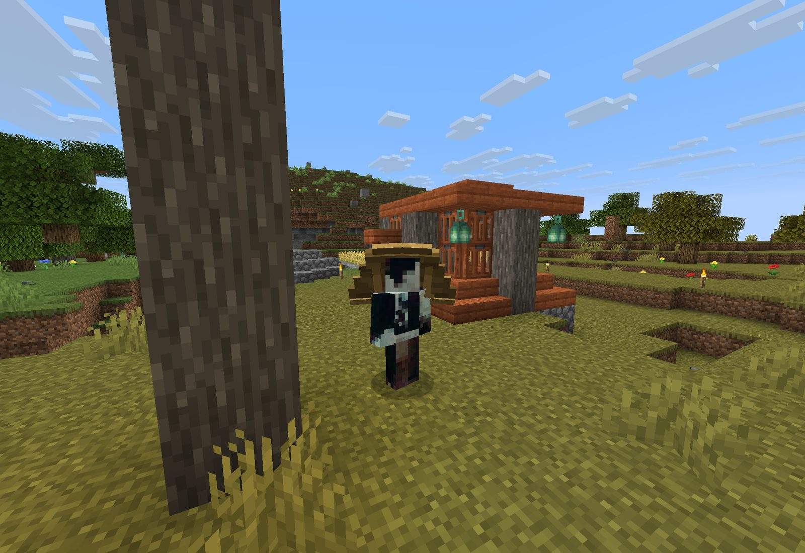

Checking server…
Semi-Anarchy Survival
Nucifera is a Minecraft survival server with custom content and a physical, item-based economy. Everything runs server side, so there's nothing to install.

In short
A survival world with vanilla friendly economy and custom items and blocks.
Modified mechanics
Some vanilla features were tweaked or removed:
- The End dimension is disabled
- No totem drops
A few simple rules
No hacks or macros, no mass terrain destruction, and keep chat free of hate speech, ads and politics. Breaking a rule means a permanent ban.
Read the rules